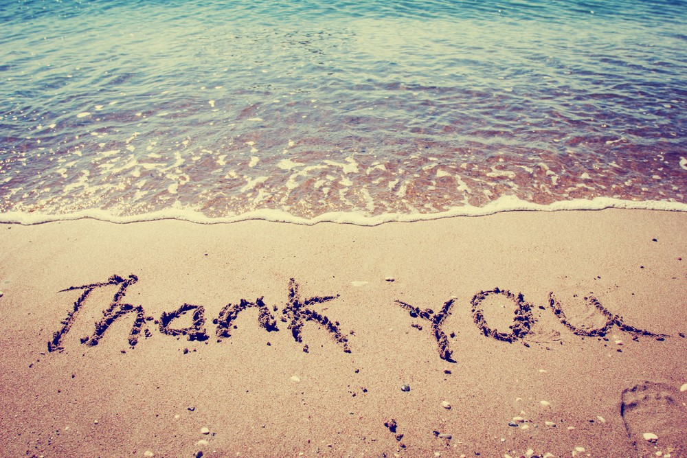

About Myself!
Hello! My name is Srikar Chintalapati and I am from Portsmouth, New Hampshire. I am currently a junior at Portsmouth High School and have a huge interest in the topic of environmental science. I love listening to professionals talk about how much damage we humans are causing on our own planet. It inspires me more and more to do my best to show support for these organizations that do their best to maintain our Earth as a "save-able" planet, instead of an "unsave-able" planet. I hope this website has inspired you to create some change that gets passed on to more and more people and helps the oceans and our planet overall in one way or another. Thank you so much for taking some time off your day to take a quick glance at this website! If you have any more questions, you can contact me using my gmail: schintalapati2020@gmail.com.
